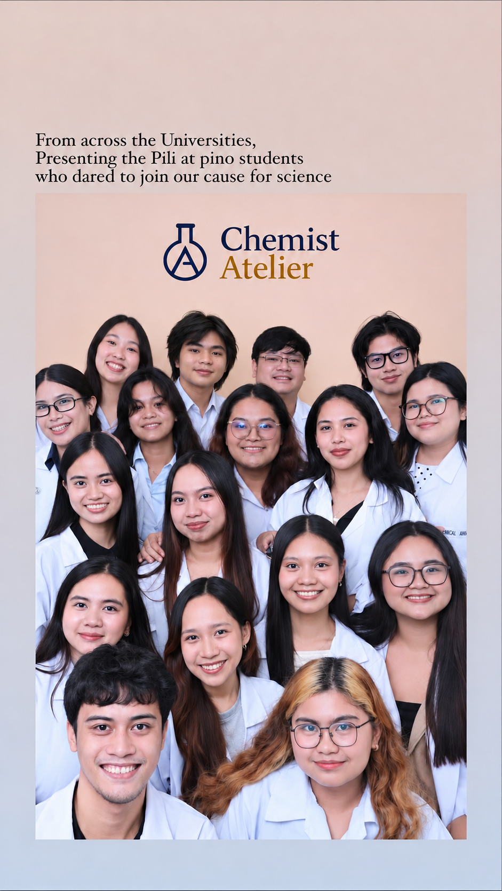

Chemist Atelier
Across universities, united by inquiry.
The wider atelier connects research in tool development, polymer materials, and heritage chemistry. Every member contributes to a shared culture of careful measurement, practical ingenuity, and responsible scientific work.